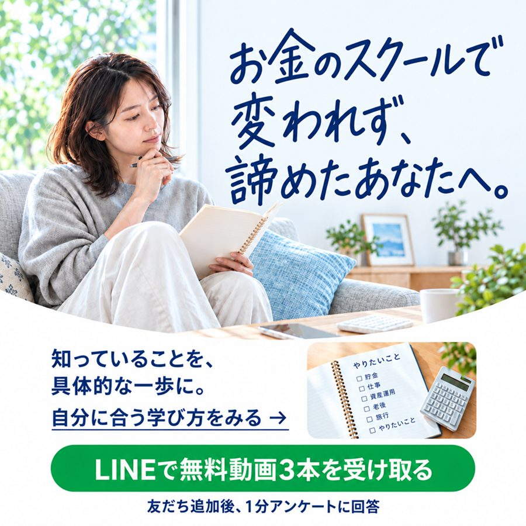
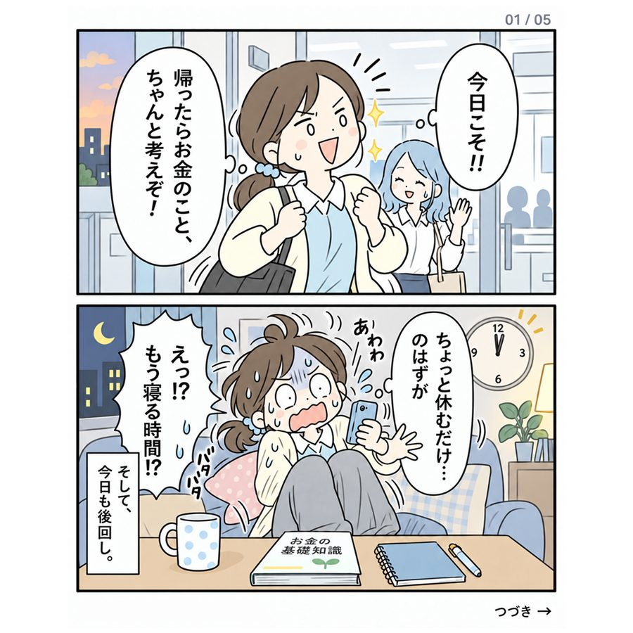
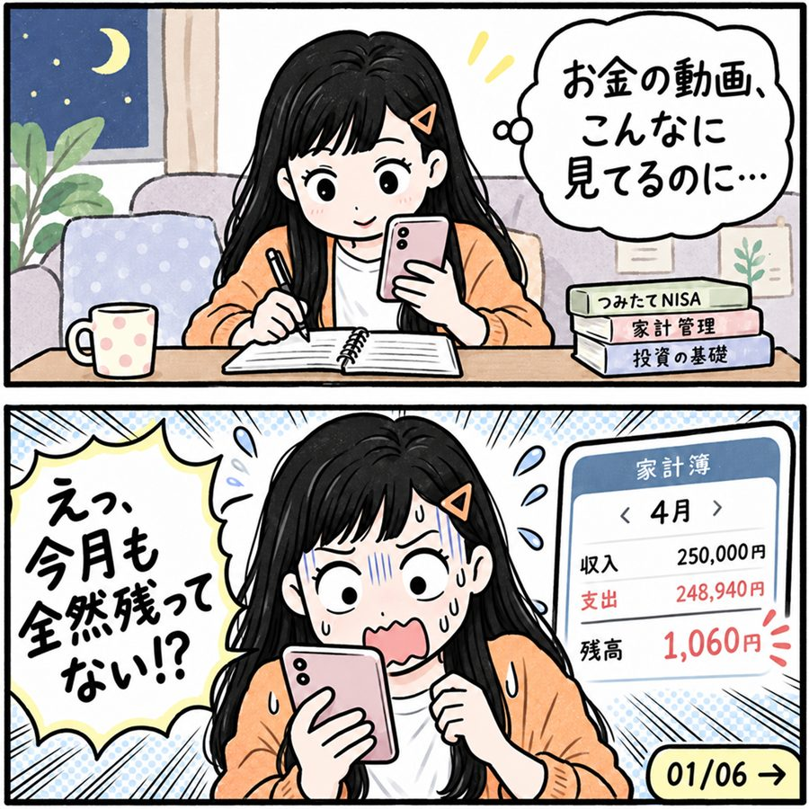
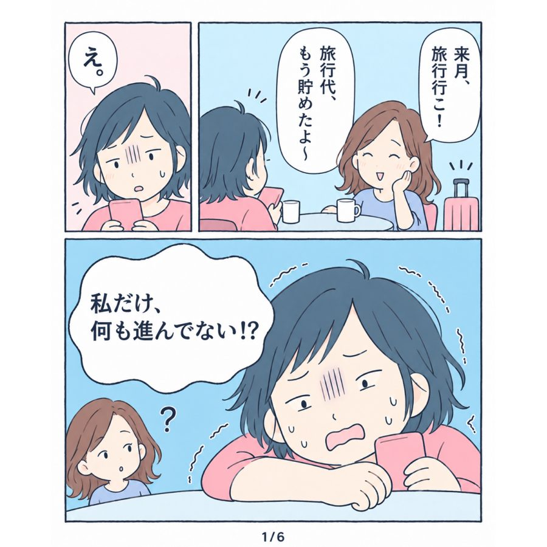
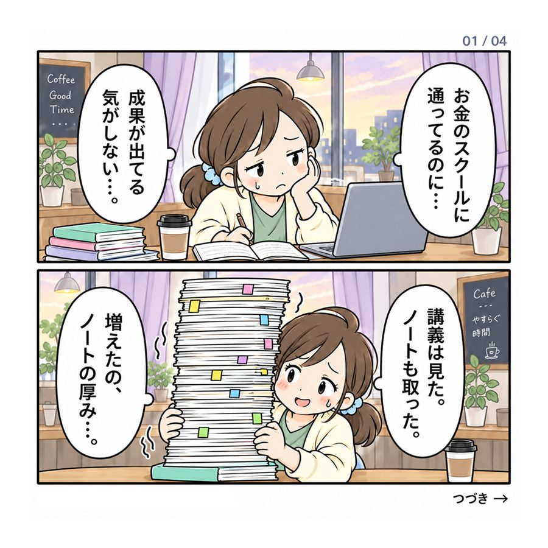
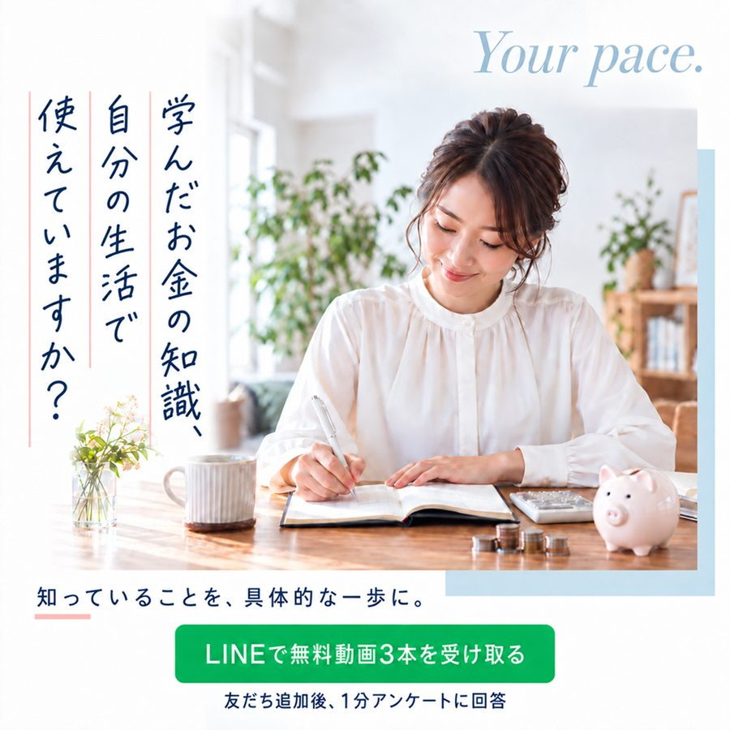
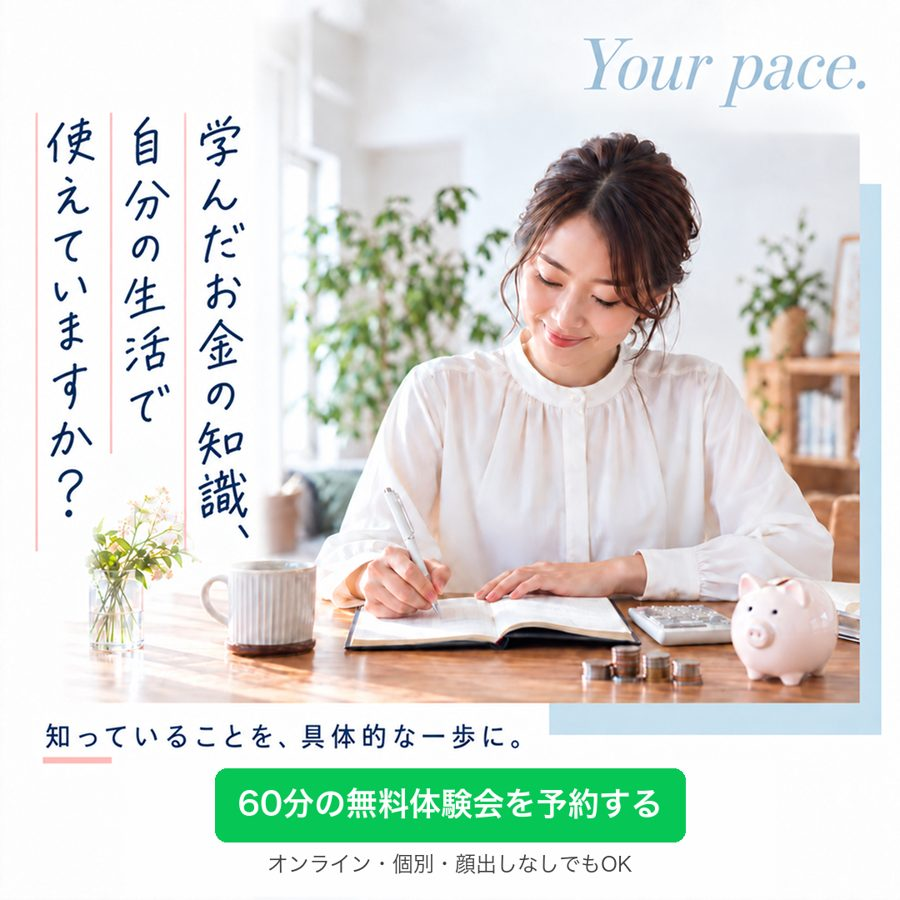
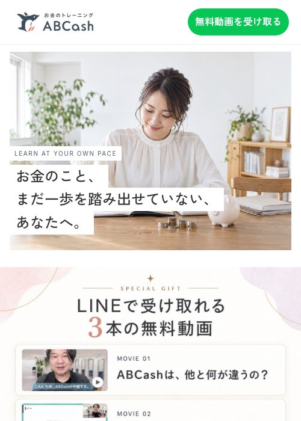
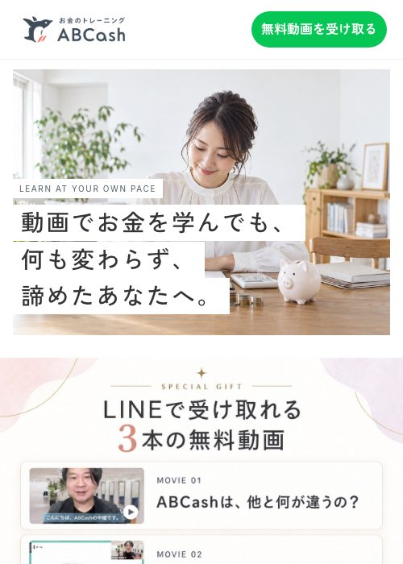
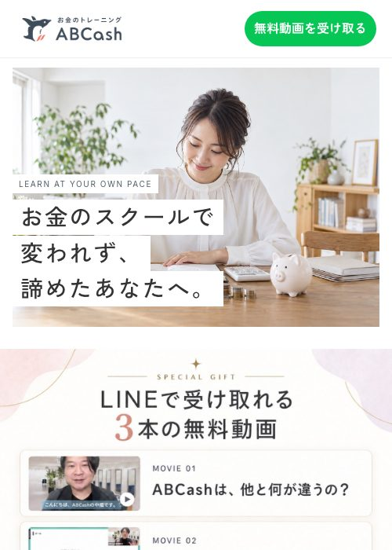

ABCASH × MERONE｜広告アンケート
設問一覧（回答者の画面の順番どおり）
アンケート本体のコードから自動で書き出しています。あなたの部分は、申し込んだことがある人には「申し込む前のあなた」と表示されます。
全21画面42問所要7分ほど名前は聞かない
回答画面 https://kumiko0814.github.io/abcash-horiokoshi/banner-survey/ 集計画面 同URLの admin.html
画面 1はじめに
「正解はありません。」＋どれも刺さらない場合でも、率直に答えていただいて失礼には当たりません。直感でお答えください。＋所要時間7分ほど
画面 2まず教えてください
Q1ABCash（お金のトレーニングスクール）との関わりは？
ABCashに入会した（受講中・卒業）体験会は受けたが、入会しなかった体験会に申し込んだが、行かなかったABCashは知っているが、申し込んだことはないABCashを知らなかった
画面 3〜6広告 1〜4（1つずつ画像を表示）
実写「動画で…」は全員に表示。残りの5点から3点を均等に割り付け、4点を順番ランダムで見せます。カルーセルは横にスワイプして全枚見てもらいます。






4点それぞれに、次の3問を聞きます。
Q2あなたなら、この広告が流れてきたらどうしますか？
スルーする止まって見る（タップはしない）タップして、無料動画だけ受け取るタップして、無料体験会の予約まで進みたい
Q3この広告をタップした先に、何があると思いますか？
無料動画がもらえるだけお金の情報がLINEで届く人に相談できる場がある何かを売られそうよくわからない
Q4この広告を見たことはありますか？
あるないわからない
画面 7今見た4つの広告を比べると
Q5あなたが1つだけ押すなら、どれ？
見た4つのサムネイルどれもない
Q6押したあと、無料体験会の予約まで進みそうなのはどれ？
見た4つのサムネイルどれもない
Q7そう思った理由は？2つまで
自分のことだと思えた絵・写真の雰囲気が好き続きが気になった何がもらえるかわかりやすい信頼できそう押しつけ感がないどれもピンとこないその他
画面 8もう1枚だけ（CTA2群比較・実写にボタンだけ差し替え）
ボタンは2群で違う：「LINEで無料動画3本を受け取る」／「60分の無料体験会を予約する」


Q8あなたなら、この広告が流れてきたらどうしますか？
スルーする止まって見る（タップはしない）ボタンを押す
画面 9広告を押した先のページ（見出しa・b・cの画像＋実ページへのリンク）



Q93つの見出しのうち、あなたが「私のことだ」と思うのはどれ？
（a）お金のこと、まだ一歩を踏み出せていない、あなたへ。（b）動画でお金を学んでも、何も変わらず、諦めたあなたへ。（c）お金のスクールで変われず、諦めたあなたへ。どれも違う
画面 10ページの中身（全体を枠内でスクロール）
Q10このページを最後まで読んだら、あなたはどうしますか？
閉じる無料動画だけ受け取る無料体験会を予約したくなるもう少し情報がほしい
Q11読んでいて、引っかかったところは？2つまで
何をする体験会なのかわからない料金がわからない売り込まれそう動画をもらって終わりになりそう自分に向いているかわからない写真や言葉がきれいすぎて自分ごとにならない特になし
Q12よかったところは？2つまで
悩みのリストが自分に当てはまった動画の中身がわかって安心した講師・受講生の顔が見えた自分のペースでいいと思えた販売目的ではないとわかったよくある質問で不安が減った特になし
Q13体験会に申し込むために、足りない情報は？2つまで
体験会で具体的に何をするか受講生の実例（期間や変化）料金の目安講師の人柄所要時間・日程特になし
Q14ページについて、ひとことあれば任意
自由記述
画面 11ボタンと中身について
Q15広告のボタンがこの中にあったら、あなたが押すのはどれ？順番ランダム
無料動画3本を受け取るとりあえず無料で聞いてみる自分のタイプを知る60分の無料体験会を予約するどれも押さない
Q16無料体験会（60分・オンライン・個別）に申し込みたくなるのは、どれがあるとき？2つまで
無料動画3本がもらえる自分のタイプに合ったお金の整え方がわかる毎月いくら使っていいかがわかる同じ立場の受講生の実例が聞ける参加特典（ギフトなど）がある金融商品の販売がないとわかっている顔出しなし・聞くだけでいいどれもない
画面 12あなたなら、どんな広告？
Q17あなたなら、どんなバナー（広告）だったら、ABCashの無料体験会に申し込みたくなりますか？必須
絵・写真・言葉・もらえるもの・出てくる人など、何でも大丈夫です。今日見た広告に「こうだったら」でも構いません
自由記述（5文字以上）
画面 13この見出しについて（実写「動画で…」を再表示）
Q18見出しの「動画で」は、何の動画だと思いましたか？
YouTubeなど無料の動画有料のオンライン講座の動画この広告（ABCash）の動画わからなかった
Q19この見出しは、あなたに当てはまりますか？
当てはまる少し当てはまる当てはまらない
Q20この見出しを読んで、どう感じましたか？
近いもの1つ
意味がすぐわかった2回読んだ何を言っているかわからない少し失礼に感じた特に何も感じない
Q21同じ写真で見出しを変えるなら、あなたが一番押したくなるのはどれ？順番ランダム
お金の話が、自分ごとに変わる60分。貯金も投資も、なんとなくのままの方へ学んだお金の知識、使えていますか？知ってる。でも、できていない。その先へ。三日坊主でも、いい。学び方から選ぼう。今のままがいいどれも押さない
Q22自分ならこう書く、があれば一言どうぞ任意
自由記述
画面 14画像の作られ方について（見た4つの広告のサムネイル）
Q231〜4つ目の広告それぞれ：この画像はどうやって作られたと思いますか？
人が作ったと思うたぶん人たぶんAIAIで作ったと思うわからない
Q24広告の画像がAIで作られたものかどうか、ふだん見分けられると思いますか？
だいたいわかるときどきわかるほとんどわからない考えたことがない
Q25広告を見て「AIで作ったな」と感じたとき、タップしたい気持ちはどう変わりますか？
下がる少し下がる変わらないむしろ上がるAIだと気づいたことがない
Q26「AIで作ったな」と感じるのは、どんなところですか？2つまで
顔や肌がきれいすぎる手や指の描き方表情や仕草が毎回同じ背景が単調で作り物っぽい文字やアプリ画面の違和感どこかで見た絵柄なんとなく見分けがつかない
画面 15もらえるものについて
Q27広告をタップするか決めるとき、「タップすると何がもらえるか」が書いてあることは、どのくらい大事ですか？
とても大事まあ大事あまり大事でない気にしていない
Q28もらえるものについて、広告に書いてあると安心なことは？2つまで
何がもらえるかどのくらいの量か何分で見られるか本当に無料かあとで勧誘されないか特にない
画面 16申し込んだころのこと申し込んだことがある人だけ（入会・体験会のみ・行かなかった）
Q29ABCashを知ったきっかけは？
Instagram・Facebookの広告Xの広告TikTokの広告YouTube検索知人の紹介覚えていないその他
Q30体験会を申し込む前に、迷ったことは？2つまで
営業されそうで不安何をするのかわからないお金の話を人にするのが恥ずかしい時間が合わないまた続かない気がした家族に相談が必要迷わなかった
Q31それでも申し込めたのは、何が背中を押したから？2つまで
無料だった自分に合わせてくれそうだった売り込みがなさそうだった受講生の声を見た特典があった期限・残り枠があった担当者からの連絡お金の不安が限界だったその他
Q32LINEに登録したあと、何が届いたら体験会まで進みやすかったと思いますか？
無料動画自分のタイプの診断結果担当者からのひと言体験会の日程の案内特になし・覚えていない
Q33受け取った動画や資料を、体験会の前に見ましたか？
全部見た一部見た見ていない受け取っていない覚えていない
画面 17体験会の前のこと体験会を受けた人だけ（入会・体験会のみ）
Q34体験会の前に「やっぱりやめようかな」と思ったことは？
あったなかった
Q35それでも参加したのは、なぜですか？前の答えで表示
予約していたから担当者から連絡があった特典がもらえるから気になる気持ちが勝ったその他
画面 18体験会に行かなかったこと申し込んだが行かなかった人だけ
Q36体験会に行かなかったのは、なぜですか？2つまで
営業されそうで不安になった予定が合わなくなった忘れていた気持ちが冷めた家族に反対された・相談できなかった何をするのかわからなくなったその他
画面 19申し込まなかったこと知っているが申し込んでいない人だけ
Q37ABCashの体験会に申し込まなかったのは、なぜですか？2つまで
営業されそうで不安何をするのかわからない料金が不安時間がない自分にはまだ早い気がした他の方法で学んでいる興味がわかなかったその他
画面 20最後にあなたのこと
Q38お金のことで、いちばん気になっていることは？
貯金が増えない毎月のやりくり仕事や推し活・趣味との両立ローン・借入NISA・投資老後・将来特にないその他
Q39これまで、お金のことはどう学んできましたか？
特に学んでいない動画・本・SNSで学んでいるお金のスクールに通ったことがある
Q40年代
20代30代前半30代後半40代50代以上
Q41性別
女性男性答えない
Q42働き方
会社員・公務員パート・派遣自営業・フリーランス専業主婦・主夫その他
画面 21完了画面
「ご協力ありがとうございました」＋お礼（未定）
株式会社Merone｜2026年10月2日時点（v3）